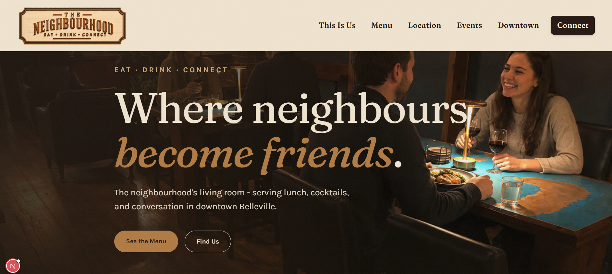

The Neighbourhood Social House is a new cafe and bar opening in Belleville, Ontario in July 2026. The owner needed an online presence before opening day: somewhere people could find the location, the opening date, and the feel of the place. He knew exactly what the café should feel like. What didn't exist yet was a spec.
This is the everyday reality of business analysis: the stakeholder is an expert in their business, not in describing systems. The gap between "I want it to feel warm and local" and a working product is the analyst's job.
We worked through what the site actually had to do for a business that wasn't open yet. That meant asking questions the owner hadn't needed to ask himself: What does a visitor need to know today, before opening? What will they need after opening day? What can the owner update himself, and what should stay simple enough to never break?
I translated those requirements into the launch website and delivered it ahead of opening day, walking the owner through the result so he understood what he'd been given and what could change later.

A small project by line count. But the skill it demonstrates is the one I use everywhere: listening to a non-technical stakeholder, turning their intent into concrete requirements, and delivering something real on a deadline that doesn't move.